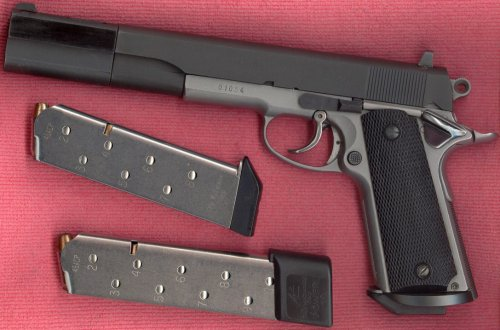
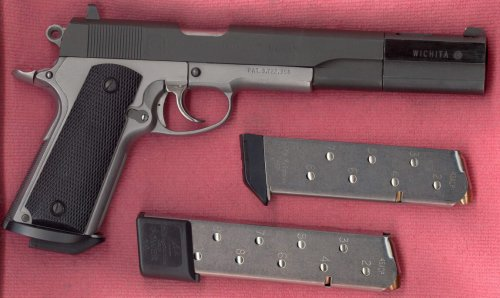

Some Gun Pix
by L. Neil SmithPage 7

This piece just fit on the glass in my scanner. It's sort of a Frankengun. The frame is from a selective double action ODI Viking parts kit that Randall sold off by the scads, cheaper than Cheaper Than Dirt, when they went out of business. They were operating under a license from Louis W. Seecamp who invented the double action retrofit—I have another gun he actually converted himself—although the Vikings were made that way from the start.
The slide is Brazilian and I have no idea where I got it. I just found it in my parts box one day. The barrel is chromed 5" stainless steel from Springfield Armory. There's a nice bushing that goes with it, but not on this particular setup.
The magazines are 8 and 10-shot Chip McCormick "Shooting Stars". I think the big pad on the 8-shooter is from Wilson,
The pad is necessary due to the Smith & Alexander magazine well. I know I should have square-bottomed grips to go with it, and when I find some I like as much as these very plain black plastic ones (also from Springfield), I'll do something about it.
The full profile bushing compensator is from Wichita, and despite the fact that barrel- mounted compensators are supposed to be better, this thing _really_ works. It's supposed to operate with an ordinary recoil spring (there's an adaptor in place of the spring retaining plug) but I have one of those mechanical buffers in there and substituted a much longer plunger rod for the short one that comes with the buffer. The compensator adds about two inches to the sight radius.
The rear sight Ken Valentine took off my 10mm Witness slide when he installed an adjustable one from Tanfoglio. The front sight I ordered from Midway (I think) or CDNN. It has a little white ball in it, to go with the dots in the rear sight. Personally, I prefer dotless sights, myself.
One of the fun things about the compensator is that you can chamber a round by pulling back on the front face of it, just below the barrel—feels like working a pump shotgun—or you can chamber a round one-handed just by pushing the muzzle against something.
What's a pistol like this for? I made it to shoot NRA "Falling Plates" (which, if you go by my performace, should be called "Standing Plates"), but you could hunt with it, too. And at this length, because people ignorant of weapons are more frightened by long-barrelled guns, it should do nicely to repel boarders.

Here's the other side. The main cosmetic change the weapon needs is that, while the slide is matte finished, the flats on the compenator are polished and need beadblasting and rebluing.